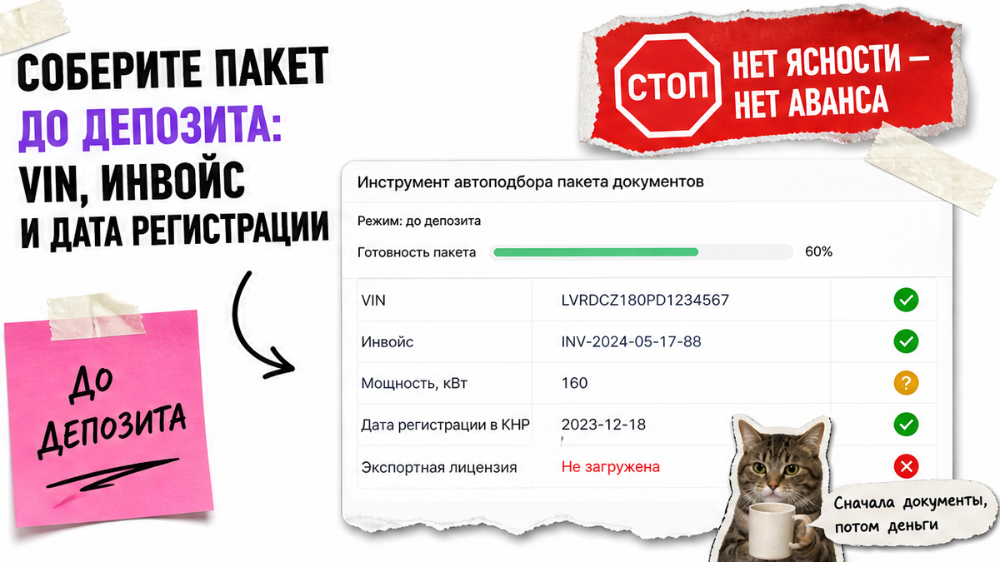
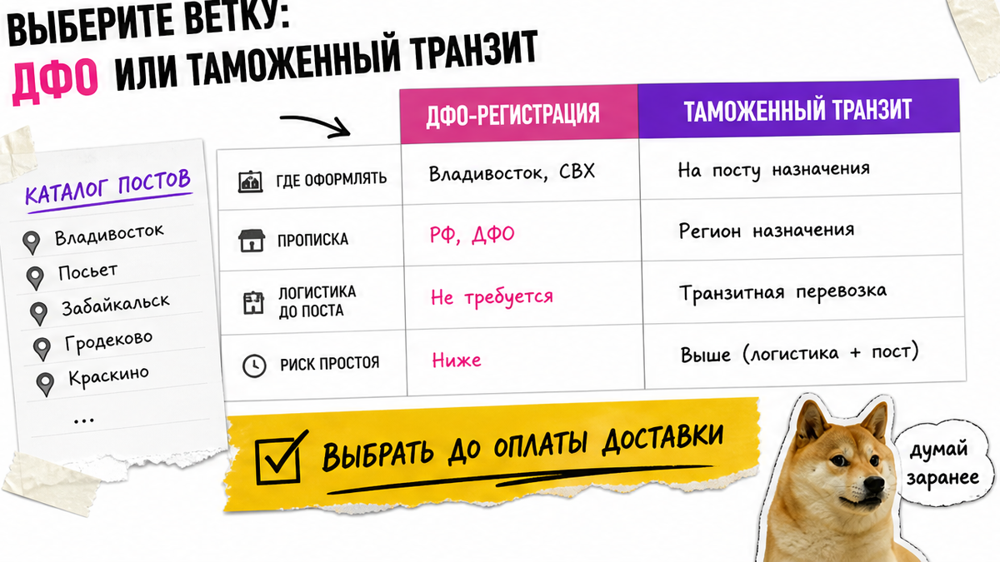
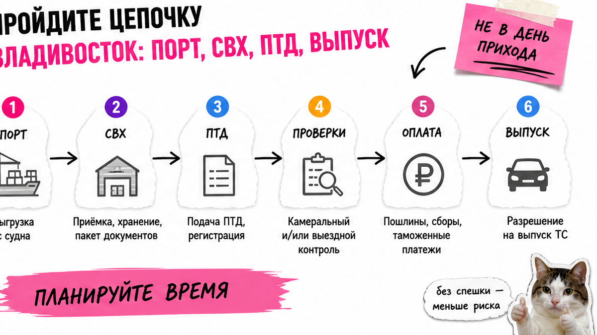

Житель Новосибирска увидел "уже почти растаможенный" кроссовер из Китая, кинул предоплату – а во Владивостоке выяснилось: нет регистрации в ДФО, в инвойсе другая мощность, без СБКТС и ЭПТС машину ни на учёт, ни домой. Растаможка авто из Китая через Владивосток в 2026 – это не "одна пошлина по картинке", а чеклист этапов до выдачи. Ниже соберёте пакет, выберете ветку ДФО или транзит и поймёте, когда авто реально готово к отправке по РФ.
TL;DR / Быстрый инсайт: До депозита сверьте VIN, мощность, дату регистрации в КНР и правило 180 дней. Во Владивостоке цепочка: порт → СВХ → ПТД → выпуск → СБКТС → ЭПТС. Без регистрации в ДФО чаще нужен таможенный транзит в регион прописки. Готовых сумм пошлин нет – точный расчёт по комплектации берите в каталоге Авто-Сейлс.
Тут важный момент: с 1 января 2026 "свежие" авто из Китая (до 180 дней с регистрации) часто упираются не в российскую таможню, а в китайскую экспортную лицензию и заводское подтверждение. Апрельские ужесточения утильсбора через ЕАЭС отложили – это две разные истории, их легко перепутать в чатах.
Мы в Авто-Сейлс во Владивостоке (Днепровская 40а, стр. 4) ведём заказы из Китая: сначала пакет и ветка оформления, потом деньги. Не считайте пошлину по скрину в Telegram – иначе СВХ съест нервы и плату за хранение.

Боль новичка: оплатил – и боится, что машину не выпустят из Китая или завернут на документах. На практике депозит без ясности по экспорту – лотерея. Сделайте один лист до оплаты: ориентир – без совпадения VIN и даты регистрации аванс не уходит.
Например, типичная ошибка – верить фразе "обходнём 180 дней". По разборам 2026 это не запрет вывоза, а доп. барьер документов; многие ждут срок. Сделайте: stop-правило "нет ясности по экспорту – нет аванса". Не делайте: слать депозит по красивой цене без даты регистрации. Избегайте обещаний "сегодня закроем 180 дней" без бумаг завода.

Если живёте не на Дальнем Востоке, вопрос про растаможку во Владивостоке решайте до оплаты доставки, а не на СВХ. Используйте таблицу как чеклист выбора ветки до брони логистики.
| Ветка | Кому подходит | Что сделать до логистики | Риск, если пропустить |
|---|---|---|---|
| Оформление на постах Владивостока / ДВ | Есть регистрация в ДФО | Подтвердить адрес и пакет физлица | Отказ в схеме "как у всех в порту" |
| Таможенный транзит | Прописка в другом регионе | Спланировать транзит в регион прописки | Простой на СВХ и лишние сутки хранения |
| "Разберёмся на месте" | Никому | Не выбирать эту ветку | Машина стоит, деньги капают |
Схема выбора:
Прописка / регистрация → ДФО есть? → да: оформление во Владивостоке → нет: таможенный транзит → только потом оплата доставки
Сделайте: выбрать ветку до брони логистики. Не делайте: надеяться, что брокер "как-нибудь проведёт" без регистрации в ДФО – уточняйте у представителя на дату сделки.

После порта машина не "ваша на учёт". На пальцах: СВХ – склад временного хранения, ПТД – пассажирская таможенная декларация для физлица, выпуск – разрешение забрать авто с таможни.
Цепочка до выдачи:
Порт → СВХ → сверка кузова с документами → расчёт / ПТД → проверки → оплата начислений → выпуск → (ЭРА-ГЛОНАСС при необходимости) → СБКТС → ЭПТС → ОСАГО → ГИБДД
Минимум до СВХ: паспорт, ИНН, СНИЛС, инвойс, коносамент или транспортные бумаги, договор, подтверждение оплаты, техданные VIN / объём / мощность. ПТД – сами или через представителя из реестра. Добавьте копии в папку сразу.
Сроки этапа в разборах – от суток до пары недель, зависят от пакета и очереди. "N дней под ключ" в рекламе часто врёт. Сделайте: закладывать хранение и не планировать перегон в день прихода в порт. Не делайте: считать, что прибытие в порт = готовность ехать. Проверьте комплектность пакета до отправки документов брокеру.
Кажется, что растаможка авто из Китая в Россию – "одна сумма". На деле это набор платежей. Готовых рублей по моделям здесь нет: ставки зависят от возраста, объёма, мощности, цены и статуса владельца, а статичный калькулятор быстро устаревает.
| Статья | Простыми словами | Когда возникает | Где брать цифру |
|---|---|---|---|
| Таможенная пошлина / единая ставка | Платёж за ввоз авто | При оформлении декларации | Индивидуальный расчёт по комплектации |
| Таможенный сбор | Плата за саму процедуру | Вместе с оформлением | По актуальному тарифу на дату |
| Утильсбор | Отдельный платёж; льготы для физлиц зависят от условий | При ввозе; порог мощности проверяйте до покупки | Только расчёт по вашей версии авто |
| СБКТС | Заключение лаборатории о безопасности конструкции | После выпуска, до ЭПТС | Лаборатория / сопровождение |
| ЭПТС | Электронный паспорт транспортного средства | После СБКТС; статус в личном кабинете СЭП | dp.elpts.ru через Госуслуги |
В реальном проекте заказчик прислал "калькулятор 2025" и ошибся по мощности на одну комплектацию – переплата вышла дороже консультации. Сделайте: запросить смету по VIN в каталоге Авто-Сейлс. Не делайте: планировать бюджет по чужой таблице "Toyota = N рублей". Используйте только расчёт под вашу комплектацию.
Льготный утиль для физлиц в публичных разборах 2026 часто связывают с порогом мощности (ориентир около 160 л.с. и рядом условий: одно авто в год, объём, без быстрой перепродажи). Порог проверяйте, суммы в статье не фиксируем – они меняются.
Чеклист stop-флагов до депозита – отметьте "да/нет":
Сделайте: отсечь опасные комплектации до перевода. Не делайте: надеяться, что "на таможне пересчитают в вашу пользу". Избегайте аванса, пока хотя бы один stop-флаг горит красным.
Типичная ошибка: после выпуска бежать в ГИБДД или грузить автовоз. Без СБКТС и действующего ЭПТС учёта нет, спокойной отправки по РФ тоже.
Критерий успеха: заполнен чеклист документов и этапов; выбрана ветка "ДФО или транзит"; VIN / мощность / дата регистрации сверены до оплаты; машина готова только после выпуска + СБКТС + действующего ЭПТС, а не после прибытия в порт.
Сделайте: ставить галочку "готова к отправке" только после ЭПТС. Не делайте: обещать семье дату приезда по треку контейнера.
Соберите лист (модель, VIN, мощность, дата регистрации в КНР, ветка ДФО/транзит) → пройдите stop-флаги по инвойсу и правилу 180 дней → запросите индивидуальный расчёт платежей и логистики → дождитесь цепочки СВХ → ПТД → выпуск → СБКТС → ЭПТС и только после ЭПТС планируйте ОСАГО, учёт и доставку по России.
Нужна смета по конкретной машине – напишите в Telegram @avtosales125 или откройте каталог avto-sales125.ru. Форм на этой странице нет: расчёт и бронь живут в каталоге и переписке.
Материал проверен: Редакция Авто-Сейлс – эксперты по авто под заказ из Японии, Кореи и Китая (Владивосток).
Достоверность: факты сверены 2026-10-05 с открытыми разборами этапов (РИА, практика оформления во Владивостоке), правилом экспорта КНР с 01.01.2026, справочниками ЭПТС/СЭП и практикой сопровождения заказов Авто-Сейлс; актуальные суммы платежей – только индивидуальный расчёт в каталоге.
Да, как физлицо через ПТД, если собираете полный пакет и понимаете ветку ДФО или транзита. На практике новичкам чаще нужен представитель из реестра на этапе СВХ и лаборатории. Самим имеет смысл идти только с готовым чеклистом документов.
Добавьте внимание к дате регистрации в КНР, экспортной лицензии и правилу 180 дней для "молодых" машин. VIN, инвойс, подтверждение оплаты и техданные нужны в любом направлении, но китайский экспортный контур в 2026 проверяйте отдельно до аванса.
После выпуска, СБКТС и действующего ЭПТС – плюс ОСАГО перед учётом. Приход в порт Владивостока сам по себе готовностью не считается. Не бронируйте автовоз "на день прибытия" без статуса ЭПТС.
Оформление на местных постах обычно завязано на регистрацию в ДФО. Без неё заранее планируйте таможенный транзит в регион прописки и уточняйте схему у представителя на дату сделки.
В личном кабинете системы электронных паспортов на dp.elpts.ru через Госуслуги. Если статуса нет – не считайте оформление закрытым и не отправляйте машину в регион.
Потому что цифры зависят от комплектации, даты ставок и статуса владельца. Берите расчёт по вашей модели в каталоге или Telegram Авто-Сейлс – так вы не опираетесь на устаревший скрин из чата.